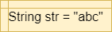

Strings are another very important data type in programming. A string is simply a set of characters that represent text in our programs. We can then write programs that use and manipulate strings in a variety of ways, allowing us to easily work with textual data.
Strings in Flowcharts & Pseudocode
The table below lists the flowchart blocks used to represent strings, as well as the corresponding pseudocode:
| Operation | Flowchart | Pseudocode |
|---|---|---|
| Create String |  | |
| Access Character | |
|
| String Length | |
Strings in Java
Let’s review the syntax for working with strings in Java.
String Creation
Strings in Java are declared just like any other variable:
Notice that strings are enclosed in double quotations marks ", whereas a single character is enclosed in single quotation marks:
There are several special characters we can include in our strings. Here are a few of the more common ones:
\'- Single Quotation Mark (usually not required)\"- Double Quotation Mark\n- New Line\t- Tab
String Parsing
Most of the time, we will need to be able to parse strings in order to read input from the user. This is easily done using the Scanner class in Java. Let’s refer to the skeleton code given in the earlier exercise:
This code will initialize a Scanner to read input from a file if one is provided as a command-line argument. Otherwise, input will be read from the terminal, or System.in in Java.
Once we have a Scanner initialized, we can use several methods to read data from the input:
We can find a list of all Scanner methods in the Java API Documentation
.
Finally, if we have read an entire string of input consisting of multiple parts, we can use the split method to split the string in to tokens that are separated by a special delimiter. When we do this, we’ll have to use special methods to convert the strings to other primitive data types. Here’s an example:
In this example, we are able to split the first string variable into $5$ parts, each one separated by a space in the original string. Then, we can use methods such as Integer.parseInt() to convert each individual string token into the desired data type.
Reading Input in a Loop
When reading an unknown number of lines of input, we can use a loop in Java such as the following example:
This will read input until either a blank line is received (usually via the terminal), or there is no more input available to read (from a file).
String Operations
There are also several operations we can perform on Strings in Java:
Additional methods can be found in the Java API Documentation
String Formatting
Strings can also be used to create formatted output in Java through the use of the format() method. Here’s a short example:
When we run this program, the output will be:
Each item in the formatted output can also be given additional attributes such as width and precision. More details can be found in the Java API Documentation